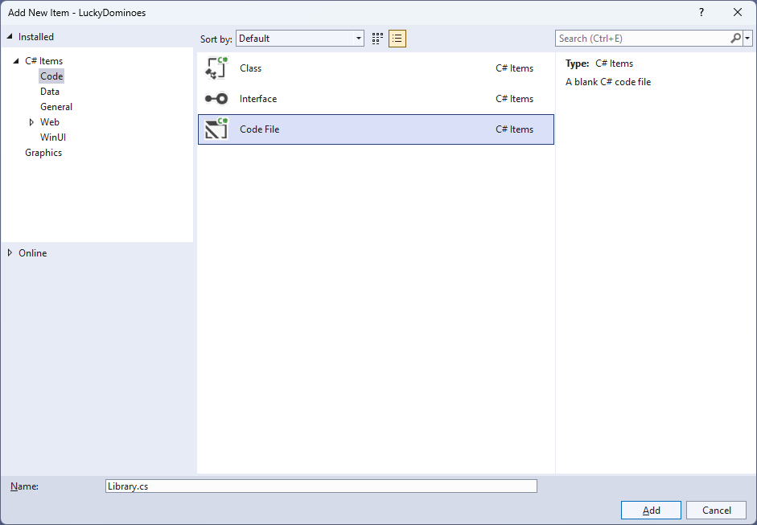
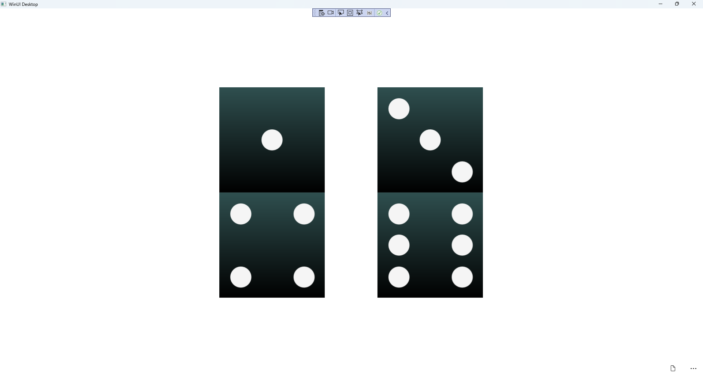

Lucky Dominoes
Learn creating a Lucky Dominoes game using Windows App SDK with this Tutorial

Lucky Dominoes shows how you can create a simple domino game using a control from NuGet using the Windows App SDK.
Step 1
Follow Setup and Start on how to get Setup and Install what you need for Visual Studio 2022 and Windows App SDK.


Step 2
Then in Visual Studio within Solution Explorer for the Solution, right click on the Project shown below the Solution and then select Manage NuGet Packages...

Step 3
Then in the NuGet Package Manager from the Browse tab search for Comentsys.Toolkit.WindowsAppSdk and then select Comentsys.Toolkit.WindowsAppSdk by Comentsys as indicated and select Install

This will add the package for Comentsys.Toolkit.WindowsAppSdk to your Project. If you get the Preview Changes screen saying Visual Studio is about to make changes to this solution. Click OK to proceed with the changes listed below. You can read the message and then select OK to Install the package, then you can close the tab for Nuget: LuckyDominoes by selecting the x next to it.
Step 4
Then in Visual Studio within Solution Explorer for the Solution, right click on the Project shown below the Solution and then select Add then New Item…

Step 5
Then in Add New Item from the C# Items list, select Code and then select Code File from the list next to this, then type in the name of Library.cs and then Click on Add.

Step 6
You will now be in the View for the Code of Library.cs, within this type the following Code:
using Comentsys.Toolkit.WindowsAppSdk;
using Microsoft.UI;
using Microsoft.UI.Xaml;
using Microsoft.UI.Xaml.Controls;
using Microsoft.UI.Xaml.Input;
using Microsoft.UI.Xaml.Media;
using System;
using System.Collections.Generic;
using System.Linq;
public class Library
{
private const string set_one = "one";
private const string set_two = "two";
private const string name_upper = "upper";
private const string name_lower = "lower";
private static readonly string[] _tiles =
{
"0,0",
"0,1", "1,1",
"0,2", "1,2", "2,2",
"0,3", "1,3", "2,3", "3,3",
"0,4", "1,4", "2,4", "3,4", "4,4",
"0,5", "1,5", "2,5", "3,5", "4,5", "5,5",
"0,6", "1,6", "2,6", "3,6", "4,6", "5,6", "6,6"
};
private readonly Random _random = new((int)DateTime.UtcNow.Ticks);
private int _turns = 0;
private List<int> _one = new();
private List<int> _two = new();
private StackPanel _panel = new();
private List<int> Choose(int minimum, int maximum) =>
Enumerable.Range(minimum, maximum)
.OrderBy(r => _random.Next(minimum, maximum))
.ToList();
// Background, Get Portion & Set Portion
// Set Domino, Get Domino & New
}
The Class that has been defined in so far Library.cs has using amongst others for the package of Comentsys.Toolkit.WindowsAppSdk.
It also defines the tiles that represent the configurations of a domino. There is also a StackPanel for the layout of the dominos and the Method of Choose which is used to select a randomised list of numbers.
Step 7
While still in the Class for Library.cs and after the Comment of // Background, Get Portion & Set Portion type in the following Methods:
private Brush Background() =>
new LinearGradientBrush(new GradientStopCollection()
{
new GradientStop()
{
Color = Colors.DarkSlateGray,
Offset = 0.0
},
new GradientStop()
{
Color = Colors.Black,
Offset = 1.0
}
}, 90);
private Dice GetPortion(string name) => new()
{
Name = name,
Background = Background(),
Foreground = new SolidColorBrush(Colors.WhiteSmoke)
};
private void SetPortion(string name, int value) =>
((Dice)_panel.FindName(name)).Value = value;
Background will create the appearance of the domino using a LinearGradientBrush and GetPortion is used to get the upper or lower part of a
domino by using the Dice control and sets the Background using the Method of Background and SetPortion will set the Value of the Dice
being used to represent the pips of the domino.
Step 8
While still in the Class for Library.cs after the Comment of // Set Domino, Get Domino & New type in the following Methods:
private void SetDomino(string name, string tile)
{
string[] pair = tile.Split(',');
SetPortion($"{name}.{name_upper}", int.Parse(pair[0]));
SetPortion($"{name}.{name_lower}", int.Parse(pair[1]));
}
private StackPanel GetDomino(string name)
{
StackPanel domino = new()
{
Margin = new Thickness(25),
Orientation = Orientation.Vertical
};
domino.Tapped += (object sender, TappedRoutedEventArgs e) =>
{
if (_turns > 0)
{
SetDomino(set_one, _tiles[_one[_turns]]);
SetDomino(set_two, _tiles[_two[_turns]]);
_turns--;
}
else
New(_panel);
};
domino.Children.Add(GetPortion($"{name}.{name_upper}"));
domino.Children.Add(GetPortion($"{name}.{name_lower}"));
return domino;
}
public void New(StackPanel panel)
{
_panel = panel;
_panel.Children.Clear();
_panel.Children.Add(GetDomino(set_one));
_panel.Children.Add(GetDomino(set_two));
_turns = _tiles.Length - 1;
_one = Choose(0, _tiles.Length);
_two = Choose(0, _tiles.Length);
}
SetDomino will set the values of the upper and lower portions of a domino and use the set of values that a domino can show,
GetDomino will create the layout for a domino and set up the Event when it is Tapped
to show the relevant domino and New will start a new game.
Step 9
Step 10
In the XAML for MainWindow.xaml there will be some XAML for a StackPanel, this should be Removed:
<StackPanel Orientation="Horizontal"
HorizontalAlignment="Center" VerticalAlignment="Center">
<Button x:Name="myButton" Click="myButton_Click">Click Me</Button>
</StackPanel>
Step 11
While still in the XAML for MainWindow.xaml above </Window>, type in the following XAML:
<Grid>
<Viewbox>
<StackPanel Margin="50" Name="Display" Orientation="Horizontal"
HorizontalAlignment="Center" VerticalAlignment="Center" Loaded="New"/>
</Viewbox>
<CommandBar VerticalAlignment="Bottom">
<AppBarButton Icon="Page2" Label="New" Click="New"/>
</CommandBar>
</Grid>
This XAML contains a Grid with a Viewbox which will Scale a StackPanel.
It has a Loaded event handler for New which is also shared by the AppBarButton.
Step 12
Step 13
In the Code for MainWindow.xaml.cs there be a Method of myButton_Click(...) this should be Removed by removing the following:
private void myButton_Click(object sender, RoutedEventArgs e)
{
myButton.Content = "Clicked";
}
Step 14
Once myButton_Click(...) has been removed, within the Constructor of public MainWindow() { ... } and below the line of this.InitializeComponent(); type in the following Code:
private readonly Library _library = new();
private void New(object sender, RoutedEventArgs e) =>
_library.New(Display);
Here an Instance of the Class of Library is created then below this is the Method of New that will be used with Event Handler from the XAML,
this Method uses Arrow Syntax with the => for an Expression Body which is useful when a Method only has one line.
Step 15
Step 16
Once running you should see the bingo card then you can select either domino which will show a randomised value of all the possible values, or you can select New to restart.

Step 17